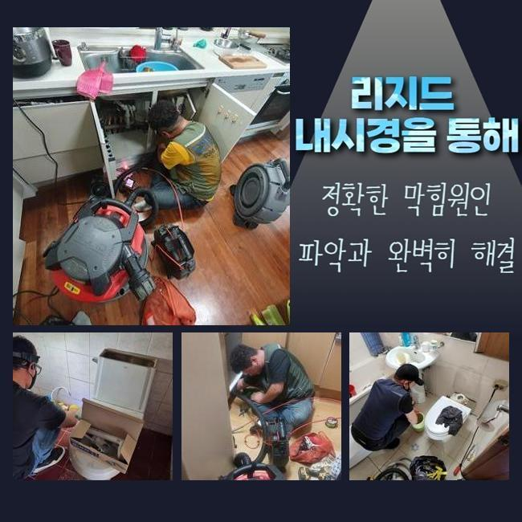
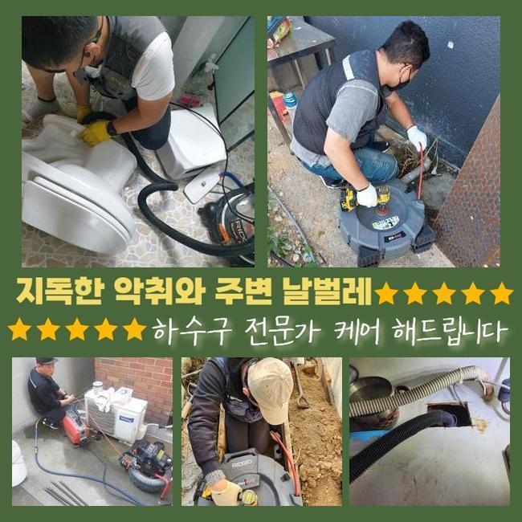
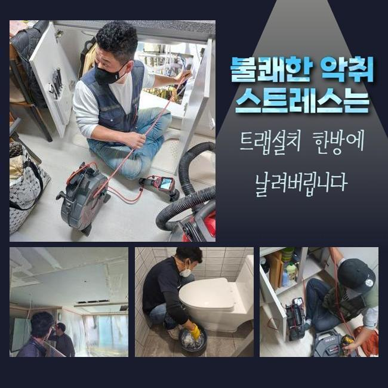
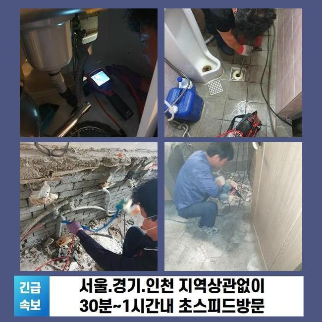
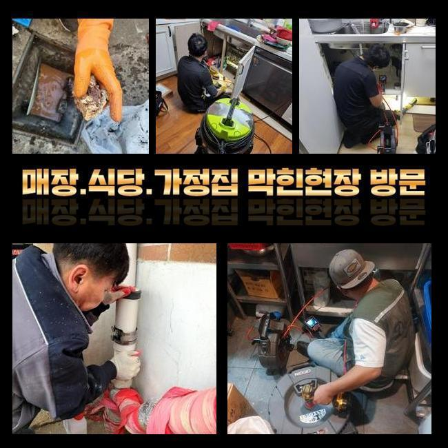
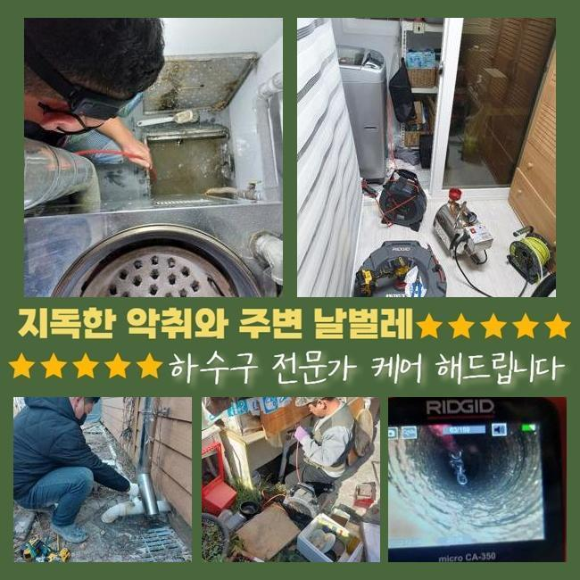

🏠 양평 양서면욕실뚫음 지평면 집수정청소 누수탐지
용인 배관막힘 전문 시공 후기

📋 작업 개요
- 위치: 용인
- 서비스 유형: 배관막힘, 집수정막힘, 누수수리, 역류해결, 뚫는업체, 배관청소, 고압세척, 설비공사
- 작업 일시: 2025. 3. 30. 2:39
- 업체명: 하수구수사대 (010-5615-2118)
🔍 문제 상황
양평 양서면욕실뚫음 지평면 집수정청소 누수탐지
주방이나 욕실은 우리 일상의 필수인 장소인데요
그러므로 일상중에 갑작스럽게 관로가 막혀버린다면 불편은 엄청날 것입니다
반면 물이 천천히 빠지는 상황을 내버려두고 방치해버리는 고객분들이 많죠
시일이 지나가면 증상이 소멸되거나 더이상 확대는 안될거라 생각하기 때문이에요
그렇지만 현실적인 상황은 그런식으로 흘러가지 않아요
이를 초창기에 적합하게 처치한다면 골치아픈 정황을 막을수 있죠
배수기능이 저하되었다는건 관로의 어딘가에 물흐름을 막는 노폐물이 머물러있다는 이야기입니다
이물질들이 추가로 누증돼 한층 까다로운 장애로 발달하기전 배관전문가에게 의뢰해서 적합하게 검정을 실시하고 세정해야 한답니다
저저번주에 내방드린 지점을 지금 바로 말씀드리고자 하는데요
유사한 증세로 빠른 수습을 원하시는 분들께 보탬이 됐으면 합니다
저희기술팀이 출장간 데는 빌딩의 1층에 자리잡은 분식집이었습니다
일주일전 쯤부터 화장실과 주방시설에 이르기까지 전반적으로 물이 안내려간다고 말씀하셨죠

🔎 원인 분석
💡 전문가 진단: 정밀 진단 장비를 사용하여 슬러지의 고착 여부를 판명하고 타격/세척 작업을 실시했습니다.
100% 멈춘건 아니었으며 하루지나면 소멸되어서 다음에 고치자는 생각을 갖고 사용을 이어가갔다 하시네요
그래서 결국에는 막힘이 심화되어서 물빠짐이 안되었으며 악취 및 역류까지 일어나게 된거죠
배관구조는 난해하고 좁다란 통로로 형성돼 있죠
따라서 표면적으로 볼땐 이물들이 얼마만큼 상존하는지 알기가 어렵답니다
그러므로 공사현장으로 출발할때는 내시경cctv를 필수적으로 소지해야 해요
내시경cctv의 끝부분엔 전용카메라가 존재하는데요
그걸로 직관하기 어려운 파이프 하부까지 선명하게 검사가 가능한것이며 찌꺼기의 특성까지 알수있는 거예요
내시경설비를 통해 확인해본 파이프 속은 엄청나게 더러웠는데요
석회성분을 포함하여 갖가지의 침전물들이 누증된 상태였죠
해당 잔존물들이 뒤엉켜서 바위처럼 견고해진 상황이어서 비좁은 배관 길목을 막아서 물빠짐이 올바로 되지 않았어요
이것들을 방치하는 경우엔 성분이 더욱 단단해져 배관과 일체화될수도 있어요
그리된다면 한층 형편이 악화하는 것이기 때문에 재조속히 수리하기로 합니다
이때 쓰는 기기는 샤프트분쇄기입니다

🔧 작업 과정
좁아진 배관틈으로도 쉬이 진입이 되는 이점이 있죠
노즐의 끝부분에는 체인노커라는 부속이 존재하여 고속으로 돌아가면서 하수관내에 잔류하는 굳어진 다양한 찌꺼기들을 바스러뜨리게 되죠
바로 이물분쇄업무를 진행했는데요
전동드릴과 기계를 연결시킨뒤에 샤프트기계를 돌려 벽면에 붙은 찌꺼기들을 제거해나가기 시작했답니다
어떠한 지점에 슬러지들이 집중되어 있는지 인지하여야 했기에 내시경카메라를 활용한 관찰도 같이 하였습니다
이것을 통하여 적체량이 많은장소를 우선해서 시공해나가면 한층 빨리 끝낼수가 있죠
관로 부속들이 손상되는일이 없게끔 신중한 자세로 이물질만 정확히 조준하여 제거해 나갔습니다
만일에 시공중에 하수관에 충격을 가하면 균탁이 발생하여 누수증세가 생길수도 있답니다
그렇기에 내시경설비나 분쇄기기가 구비되어야 하는 부분도 필수이지만 전문가의 테크닉 역시 훌륭해야 하겠죠
노폐물들이 잔류한 장소를 정결하게 정비하고나서 미세한 성분이라도 남지 않도록 세척하였습니다
그후 바로 점검에 들어갔는데요
많은양의 오수를 일시에 배수문으로 쏟아부었고 정체하거나 솟아오르는 증상은 없는지에 대해 진단했답니다
빠르게 빠져나가는걸 확인했고 즉각 근접한 배수설비로 건너가게 되었네요
이쯤해서 마무리 짓는다면 한두달 이용에는 지장이 없겠으나 차후 트러블이 발현될 여지가 높기 때문이었어요
욕실내의 개별배관과 결부된 횡주배관도 검사해서 정체의 근본 동기를 알아보기로 했죠
화장실 배수관에서 체증이 일어났을때 관련된 메인관까지 이물들이 적층되었을 가망성이 높기에 전면적인 파이프 소제업무를 시행하는게 합당합니다
그래서 메인관로에 접근해서 검사를 세부적으로 진행하였고 저희 예상대로 고착화된 이물들을 목견하게 되었네요
횡주배관 및 그와 연결된 파이프들까지 전면적으로 세척을 진행했고 찌꺼기가 제거된 깔끔해진 배수관을 목도할수 있었죠
플라스틱 등의 녹아내리기 힘든 쓰레기들은 일상중에 다시 쌓일 수 존재하는데요
그렇기에 정기적으로 관련기술자에게 의뢰하여 정비하시는게 좋다고 말씀드렸어요
또 장기간 배수기능을 보호하는 방책들도 쉬이 이해하시도록 잘 안내해드렸죠


✅ 작업 완료
관로에 이상이 생긴다면 일상에 큰 불편을 맞닥뜨리게 되니 초기에 그런 상황까지 발전하지 않게끔 섬세하게 방예를 하는게 좋답니다
토요일이나 주말에도 출장가능하다는 부분도 말씀드렸답니다
건축한 지 30년 정도된 건물에선 누수현상도 자주 발발하기에 이에 대한 수선의뢰도 많죠
이에 즉각 뚫음뿐만 아니라 누설수리도 시행중에 있다는걸 안내해 드렸어요
어느위치에서 물막힘이 일어났으며 언제부터 그랬는지 간략하게 전달해주시면 더 빠르게 상담해드릴 수 있습니다
그러고 나서 예약하신 때에 배관기술자가 도구들을 챙겨서 방문드리니 필요시 연락주시길 당부드려요




⚠️ 베란다 누수 및 방수 관리 방법
- ✅ 비가 많이 올 때 창틀 주변이나 아래층 천장에 얼룩이 생기는지 정기적으로 확인해 보세요.
- ✅ 우수관 주변 실리콘 마감이 들뜨거나 깨진 틈새가 있는지 손상 여부를 수시로 체크하세요.
- ✅ 베란다 바닥 타일의 줄눈(메지)이 소실되면 그 틈으로 물이 침투하여 누수가 유발됩니다.
- ✅ 누수 의심 증상 발견 시 방치하면 아래층 손실이 커지므로 즉시 전문가의 진단을 받으십시오.
💡 핵심 정리
- 확실한 장비 작업(내시경 점검 및 샤프트 스케일링)으로 원인을 뿌리 뽑습니다.
- 작업 후 1년 이내에 동일한 부위 재발 시 100% 무상 A/S 서비스를 보장합니다.
- 서울 · 경기 · 인천 전 지역에 24시간 언제든 긴급 출동할 수 있도록 항시 대기 중입니다.
❓ 자주 묻는 질문 (FAQ)
🚨 용인 배관막힘 문제로 고민이신가요?
정확한 원인 진단과 확실한 시공으로 재발 없는 해결을 약속드립니다.
24시간 긴급 출동 | 서울 · 경기 · 인천 전지역 | 1년 내 재발 시 무상 A/S